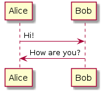

Navigation
index
arai-sample-project documentation
»
Table of Contents
Welcome to arai-sample-project's documentation!
Image
PlantUML
Indices and tables
This Page
Show Source
Quick search
Welcome to arai-sample-project's documentation!
¶
Image
¶
PlantUML
¶

Indices and tables
¶
Index
Module Index
Search Page
Navigation
index
arai-sample-project documentation
»